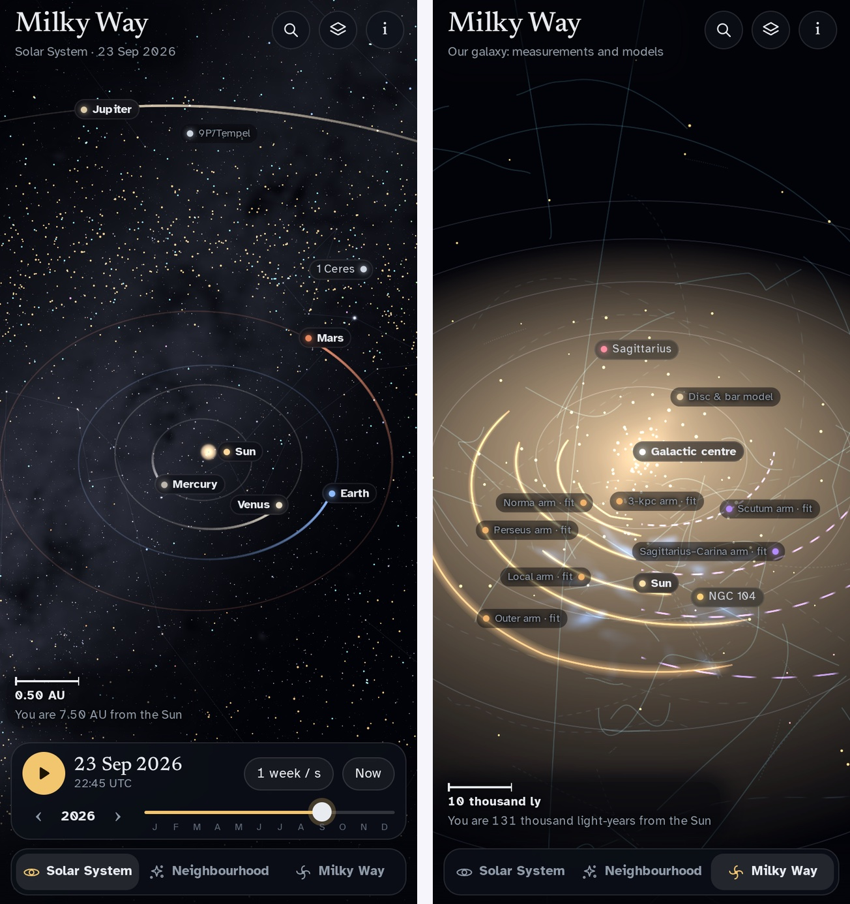

Milky Way: the planets to the galaxy, from JPL and Gaia
One of the example apps. Built by asking an AI; runs offline in Snuggery.
I wanted one continuous zoom: start a few hundred kilometres above a moon, pinch, and keep going until the whole galaxy is in view and the Sun is a dot two thirds of the way out — with nothing on the way invented. Every planetarium app I know fills the gaps with artwork. This one shows what has been measured, says when a published fit is standing in for a measurement, and shows nothing at all where nothing real could be found.
It is a 6.5 MB download — a folder of HTML and JavaScript that runs offline in Snuggery's sandbox. It was built by asking: a brief that named the sources and the rule above, an AI workflow that fetched each dataset from a pinned address and checked it against a recorded checksum, wrote the pipeline and the app, and then reviewed the result against the rule.
What is real in it
- The Sun, the planets and the Moon from JPL's DE430 ephemeris, for any date from 1900 to 2100; 21 moons of Mars and the giant planets from 1950 to 2050; each globe turned by the IAU rotation model, with NASA and USGS maps on it.
- 9,989 asteroids and comets from the JPL Small-Body Database, the Minor Planet Center and ESA's NEO Coordination Centre, propagated on the phone.
- 220,000 stars in three dimensions, mostly at their Gaia distances, drawn at their true brightness; the constellation figures come apart as you leave the Sun, because they are lines of sight, not shapes.
- The galaxy as it has actually been measured: globular clusters, satellite galaxies, stellar streams, where the young stars crowd, and two published spiral-arm fits, each labelled as a fit — no artist's impression anywhere.
- A time bar in the Solar System, from an hour to a year per second, with each planet trailing its real path. Outside the Solar System the bar hides: at those scales nothing visibly moves in a human lifetime, and the app does not pretend otherwise.
Tap anything — a planet, a star, a stream, a spiral-arm fit — for a card with what is known about it and where the number comes from. The About panel lists every source, its licence and its accuracy note.

One zoom across fifteen orders of magnitude
The hard part is numbers, not pictures. A camera that can be 300 kilometres from a moon and four light-hours from Neptune in the same scene cannot live in 32-bit floats. So the camera lives in 64-bit, in astronomical units, and nothing on the GPU ever sees those values: each frame is drawn in three passes — the stars in parsecs around the Sun, the galaxy in kiloparsecs in its own frame, and the Solar System in AU relative to a floating origin at whatever you are looking at, scaled so the target is one unit away. The GPU only ever holds offsets from the thing in front of you.
"Up" is not fixed either. Near the Sun it is the ecliptic pole, so the planets lie flat; beyond about a light-year it is the galactic pole, so the disc does; in between it turns smoothly, and leaving the Solar System shows its plane tilting by about sixty degrees against the galaxy's, which is the real angle between them.
A note on the licences
The star, sky and young-star map files contain data from the European Space Agency's Gaia mission, processed by its Data Processing and Analysis Consortium, which is licensed for non-commercial use only; the app's CREDITS.txt says so, file by file, and so does the template's licence. The two young-star maps are redistributed under a permission their authors gave to another project, and no separate grant to downstream copies was found — which the credits also say, because saying what you do not know is the whole point of the app.
Sources: JPL/NAIF DE430 and satellite ephemerides; the JPL Small-Body Database, the Minor Planet Center and ESA NEOCC; NASA and USGS planetary maps; AT-HYG and HYG (CC BY-SA 4.0) and Gaia DR3 (CC BY-NC 3.0 IGO); Stellarium (CC BY-SA 4.0); the Local Volume Database (CC0), galstreams (BSD), SpiralMap (MIT), Agama (BSD/MIT); the Open Exoplanet Catalogue (MIT); three.js (MIT). In full in CREDITS.txt.
Open it in your browser · Get the ZIP for an iPhone with Snuggery · All the examples